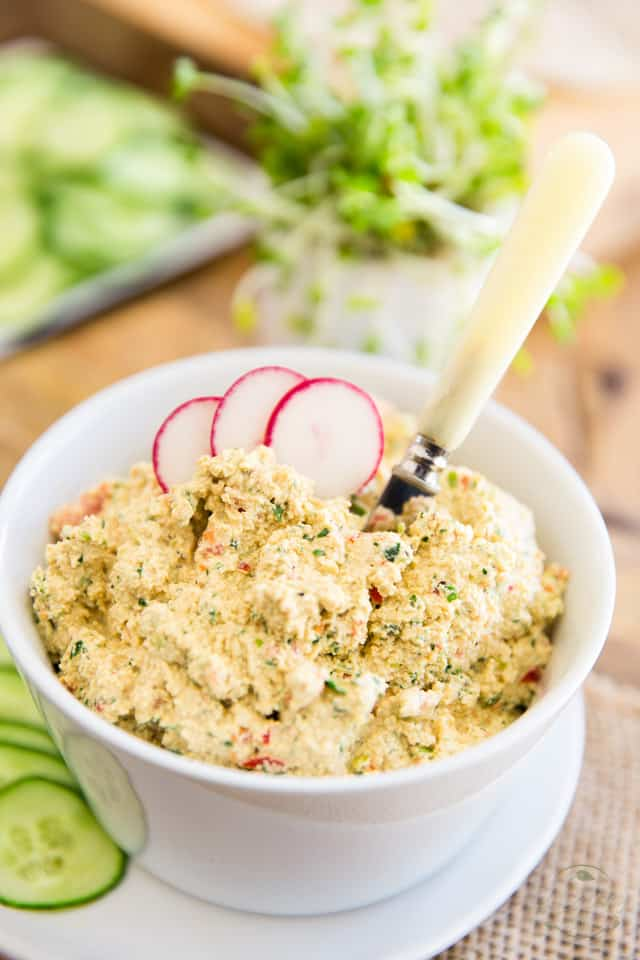

Tofu Spread
Back

Description
A vegan spread for toast, sandwiches, wraps, oh my!
Ingredients
- 12.5 oz extra-firm tofu, cubed
- 1/4 cup vegan mayonnaise
- 1/4 cup vegan mayonnaise
- 1 teaspoon salt
- 1/2 teaspoon black pepper
- 1/2 teaspoon smoked paprika
- 2 green onions, sliced
- 1/2 red pepper, roughly chopped
- 1/4 cup chopped parsley
Steps
- In a food processor, combine the cubed tofu, garlic, mayo, lemon juice, salt, black pepper and smoked paprika. Process on pulse until well combined and somewhat smooth. You want the spread to still have a bit of a texture to it, so be careful not to overprocess it.
- Add the green onions, bell peppers and parsley and pulse a few times just to fully incorporate them; small chunks should still be visible.
- Use immediately, or transfer to an airtight container and keep refrigerated for up to a week.